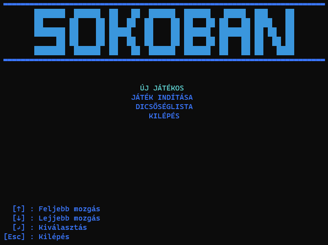
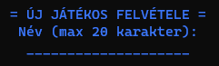
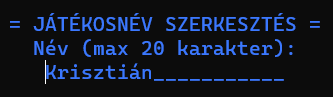
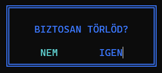
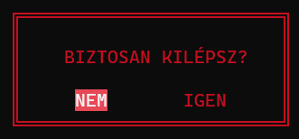

Készítette: Szenes Márton
A Szokoban egy olyan játék, ahol a játékosnak ládákat kell tologatni a játékterületen úgy, hogy azok a megfelelő helyre kerüljenek. A pálya viszont olyan, hogy könnyű betolni olyan helyre a ládákat, ahonnan már nem lehet elmozdítani őket. A pálya egy 2 dimenziós felülnézetű térben helyezkedik el. A játékterület (amin belül a ládák vannak elhelyezve és a játékos) mindig fallal van körbe véve, hogy ne tudjon azon kívül mozdulni egyik objektum se. Egy adott pálya akkor van teljesítve, ha az összes célmezőre egy-egy láda lett tolva. A Pályák nehézség szerinti sorrendben következnek egymás után.
A program elindításakor a Főmenü jelenik meg a terminálon. A programban mindig a bal alsó sarokban találhatóak meg a navigációs billentyűk, amikkel lehet a kiválasztást vagy a játékost mozgatni vagy belemenni egy menüpontba, vagy kilépni belőle.
A főmenüben a következő menüpontokat lehet találni:

A menüben a ↑(fel), ↓ (le), → (jobbra), ← (balra) kurzor billentyűkkel lehet navigálni. Egy menüpont kiválasztása az Enter billentyű lenyomásával lehetéséges. Visszalépni egy menüpontból az Esc vagy a Backspace billentyűkkel lehetséges. Ha a főképernyőn nyomjuk meg utóbbi billentyűk valamelyikét, akkor a Kilépés menü jön fel.
Az Új játékos menüt kiválasztva megjelenik egy 20 karakter széles beviteli mező. Ide lehet bevinni a billentyűzetről az új játékos nevét, ami tartalmazhat ékezetes- és nem ékezetes karaktereket is. A kívánt név beírása után az Enter-t lenyomva elmenti a program a játékosnevet, és visszalép a Főmenü-be. Ha mégsem szeretne a felhasználó új nevet bevinni, akkor üres sornál nyomja meg az Enter-t.

A Játék indítása menüt kiválasztva megjelennek az adatbázisban szereplő játékosok és teljesített szintjeik száma. Amennyiben még egy játékos sem lett felvéve az adatbázisba, akkor a "Nincs egy játékos sem még." felirat jelenik meg. A Játékos felvételéhez navigáljon az Új játékos menübe. A játékosok között a kurzor billentyűkkel ( ↑(fel), ↓ (le) ) lehet navigálni, és az Enter billentyűt lenyomva lehet kiválasztani egy játékost és elindítani a Játékot.
| Üres játékoslista | Nem üres játékoslista |
|---|---|
|
|
A felvett játékosok nevét lehet szerkeszteni. Ehhez navigálja a kijelölést a kívánt játékosra a listában, és az E billentyű lenyomásával megnyílik a játékosnév szerkesztése almenü, amiben átírhatja a nevet. A mentéshez nyomja meg az Enter-t. Ha mégsem szeretné szerkeszteni, nyomjon Enter-t az üres sornál.

A felvett játékosokat lehet törölni. Ehhez navigálja a kijelölést az eltávolítani kívánt játékosra a listába, és a D / DELETE billentyű lenyomásával megjelenik egy ablak, amiben rákérdez a program, hogy "Biztos törlöd?"-e. Igen/Nem opciók közül az Igen-t választva törlődik a játékos az adatbázisból, a Nem-et választva pedig visszatér a program a Játékoslistához.

A Dicsőséglista menüt kiválasztva megjelenik egy táblázat, amiben a játékosok a egyes szinteken megtett lépések számát jeleníti meg. A fejlécben a játékosok nevei találhatóak, a bal szélső oszlopban pedig a szint sorszáma.

A Kilépés menüt kiválasztva megjelenik egy ablak, amiben rákérdez a program, hogy "Biztos kilépsz?"-e. Igen/Nem opciók közül az Igen-t választva a program leáll, a Nem-et választva pedig visszatér a program a Főmenü-be.

A játék elindításakor megjelenik a pálya, a pálya szintjének a sorszáma és a megtett lépések száma. Ha új játékos indítja el első alkalommal a játékot, akkor a tutorial szint indul el, ahol röviden elmagyarázza a program a játékot. Ez a szint nem számít bele a statisztikába. Célja, hogy megismerje a felhasználó a játékos bábu mozgatását és a doboz tologatási lehetőségét. A pályánt kirajzoló elemek:
A további szinteken már csak a szint sorszáma és a lépésszám lesz megjelenítve a pálya mellett. A navigációs billentyűk, ahogy a menüben is a képernyő bal alsó sarkában találhatóak.
↑(fel), ↓ (le), → (jobbra), ← (balra))V billentyű lenyomásával lehet elérni, azonban minden egyes visszalépés ugyanúgy lépésnek számít, így egyel növeli a lépések számát, hogy fair play (sportszerű) legyen ennek a funkciónak a használata.R billentyű lenyomásával újraindul az adott szint, visszaáll minden mező az eredeti állapotára és a lépésszámláló is nullázódik. Ezáltal újból megpróbálhatja a játékos a pályát teljesíteni elölről.flowchart TD
A[Főmenü] <--> |Enter| B(Új játékos)
A <--> |Enter| C(Új játék)
A <--> |Enter| D(Dicsőséglista)
A <--> |Esc| E(Kilépés)
C --- F[Játékos választás]
F <--> |D/DEL| G(Játékos törlése)
F <--> |E| H(Átnevezés)
F --> |Enter| I(Játék indítása)
I --- J[Játék]
J <--> |Esc| K(Kilépés a Játékból)
J --> |Szintlépés| J
K --> F
Jó játékot kíván a készítő, Szenes Márton!